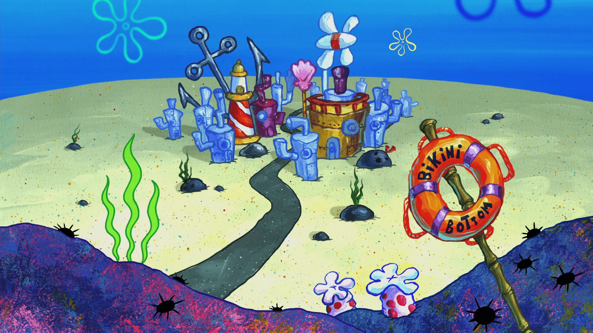

Primeiro parágrafo
Segundo parágrafo
Uma linha
Duas linhas
Três linhas

Bob Esponja Calça Quadrada (nascido em 14 Julho de 1986, 33 anos de idade) é o principal protagonista e o personagem da série com o mesmo nome da Nickelodeon. Ele foi projetado pelo biólogo marinho e animador Stephen Hillenburg, e é dublado por Tom Kenny (no Brasil, é dublado por Wendel Bezerra). Bob Esponja é ua infantil e excêntrica esponja do mar que vive em um abacaxi na cidade subaquática, Fenda do Biquini. Ele trabalha como cozinheiro no Siri Cascudo, um trabalho em que ele é extremamente hábil. Bob Esponja não tem muito conhecimento e é um aborrecimento constante para aqueles ao redor dele (especialmente Lula Molusco), mas ele tem uma boa índole.
Patrick Estrela é o melhor amigo de Bob Esponja. Ele é uma estrela do mar estúpida, mas bem-intencionada, Ele não é o mais inteligente dos peixes no mar. Patrick é bastante gordo e adora sorvete e muitos outras porcarias. Ele é o deuteragonista do show. Ele mora debaixo de uma pedra. Bob Esponja e Lula Molusco são seus vizinhos.

Lula Molusco é um polvo ranzinza, sempre de mal com tudo e com todos. Ele é o antipático vizinho do Bob, apesar do nome Lula é um polvo. O Lula trabalha no Siri Cascudo como caixa, junto ao atrapalhado Bob, e quase sempre se irrita com o comportamento infantil do companheiro. Adora tocar clarineta, e espera se tornar um dia um músico famoso, mas não é muito bom nisso. Seu arquirrival da escola de música se chama Squilliam Fancyson, além disso possui um trauma, o de ser careca.